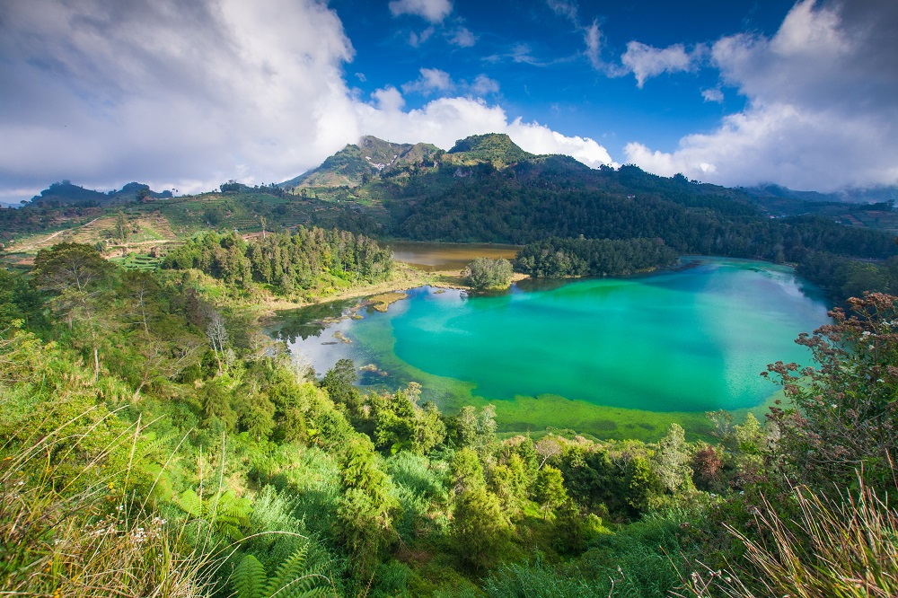

Telaga Warna
Lokasi
Dataran tinggi Dieng memang terkenal dengan keindahan alam yang mempesona para wisatawan. Telaga Warna merupakan salah satu wisata terbaik dari dataran tinggi dieng. Berada di ketinggian 2000 meter diatas permukaan laut tidak menghalangi para wisatawan untuk mengeksplor keunikan panorama alam Telaga Warna. Secara Administratif, Telaga Warna Masuk Wilayah Desa Dieng Wetan, Kecamatan Kejajar, Kabupaten Wonosobo, Jawa Tengah.
Informasi Umum
Pemandangan danau yang tenang dengan permukaan air yang hijau dikelilingi pepohonan rindang dipadu dengan pantulan cahaya matahari yang akan membiaskan warna danau bak pelangi menjadi keunikan telaga ini. Karna keunikannya telaga
tersebut oleh penduduk sekitar diberikan nama Telaga Warna Dieng. air yang ada di tempat tersebut sering berubah-ubah, terkadang memiliki warna hijau, lalu kuning, dan pernah suatu ketika warna bisa menjadi banyak seperti pelangi.
Hal tersebut terjadi bukan karena ada kekuatan gaib, akan tetapi karena air telaga disini mengandung zat sulfur yang cukup tinggi, sehingga ketika terkena paparan sinar Matahari, warnanya akan seperti pelangi. Selain itu, di
telaga ini juga terdapat letupan air mendidih di tengah-tengah telaga seperti yang terjadi di Kawah Putih, Provinsi Jawa Barat. Menurut mitos yang berkembang di Masyarakat Dieng, beragam warna yang muncul dipermukaan Telaga Warna,
Konon diakibatkan pada jaman dahulu kala ada Cincin milik seorang bangsawan yang jatuh ke dasar telaga tersebut.
Memasuki gerbang Telaga Warna, anda akan menjumpai 2 cabang Jalan setapak. Menyusuri Jalan setapak sebelah Kanan, selain keindahan pemandangan Telaga Warna anda juga bisa melihat Kejernihan panorama Telaga Pengilon yang terletak
tepat bersebelahan dengan Telaga Warna. disepanjang Jalan setapak, anda juga terdapat beberapa Goa seperti Goa Semar, Goa sumur, Goa jaran serta Batu Tulis.
Di Telaga Warna Dieng juga ada beberapa Candi bercorak Hindu yang menghiasi pemandangan di area Telaga Warna Dieng tersebut. Maka tak heran apabila banyak wisatawan yang berkunjung ke Telaga Warna Dieng untuk berwisata ataupun
sekedar melepas penat dengan menghirup udara segar di daerah pegunungan saat musim liburan. Selain sebagai obyek wisata, Telaga Warna Dieng juga memiliki manfaat untuk warga sekitar sebagai sumber irigasi untuk mengairi tanaman
yang menjadi komoditas utama di daerah Dieng tersebut.
Ada sebuah tempat menarik di sekitaran Telaga Warna Dieng dimana Andabisa menyaksikan pemandangan Telaga Warna dan Pengilon dari ketinggian. Nama tempat ini Batu Ratapan Angin, seunik namanya, spot favorit wisatawan untuk berselfi
ini juga terhitung unik. Meski cuma berupa dua buah batu yang berada ditempat yang agak tinggi, pesona Batu ini senantiasa menarik para wisatawan untuk mengunjunginya.
Akses Transportasi dan Harga Tiket
Untuk harga tiket masuk ke Telaga Warna Dieng cukup besahabat, Anda hanya akan dikenakan biaya Rp 20.000 /orang, dan dengan tiket tersebut sudah termasuk mengunjungi obyek wisata Telaga Warna dan wisata lain disekitarnya. Untuk jalan akses menuju ke Kawasan Wisata Dieng, jaraknya berada sekitar 114 Km dari kota Yogyakarta. Rute yang Anda lewati nantinya adalah dari kota Yogyakarta – Magelang – Wonosobo – Dieng, dan jarak tempuhnya jika menggunakan kendaraaan pribadi sekitar 3 Jam, namun jika kalian menggunakan kendaraan umum waktu tempuhnya sekitar 4 jam perjalanan.